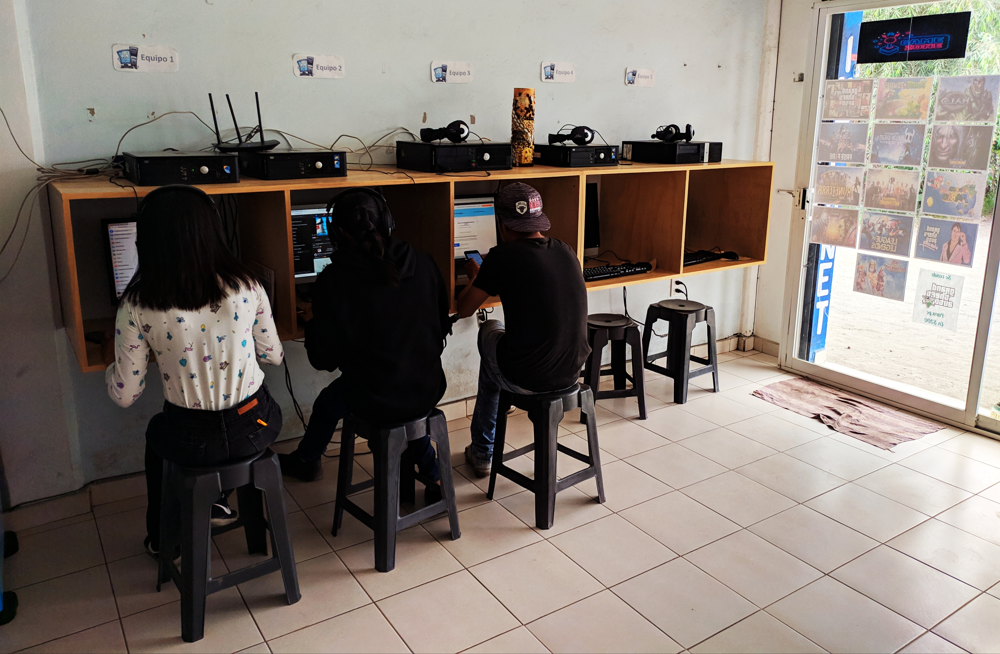
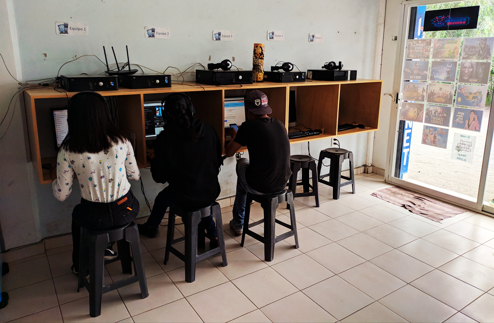
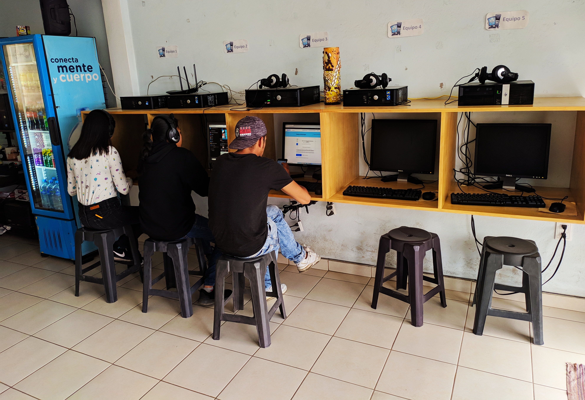
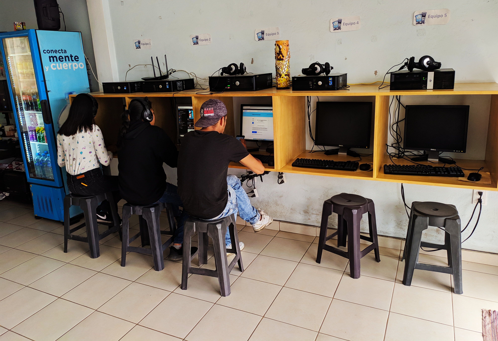

Más Sobre Nosotros
Somos un negocio dedicado a la renta de internet, venta de productos de papelería,mantenimiento y reparación de equipos de computo, celulares e impresoras, Además apoyamos con tareas de cualquier nivel académico. Para estos trabajos contamos con ingenieros especializados en tecnología y matemáticas, para garantizar un servicio completo y trabajos escolares bien hechos. Contamos también con servicio a domicilio dentro de nuestra área de trabajo. Este establecimiento abrió por primera vez el día 2 de febrero del año 2020, el negocio es atendido por Ingenieros en sistemas computaciónales y en biotecnología, los cuales se esmeran en su trabajo para que tu visita sea una experiencia única. Además el personal esta en constante actualización, esto quiere decir que recibiras un servicio con una calidad plus.
 


 
